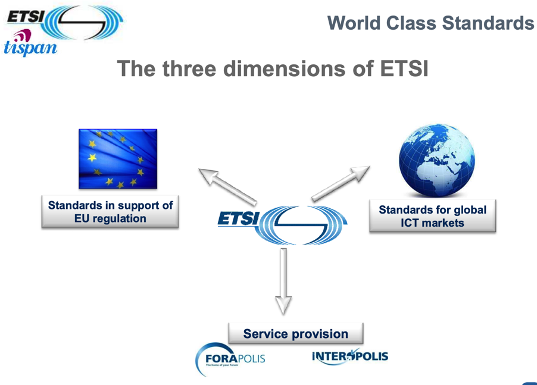
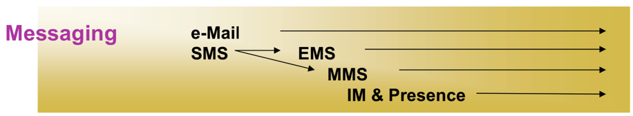
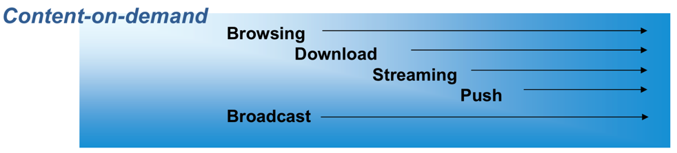
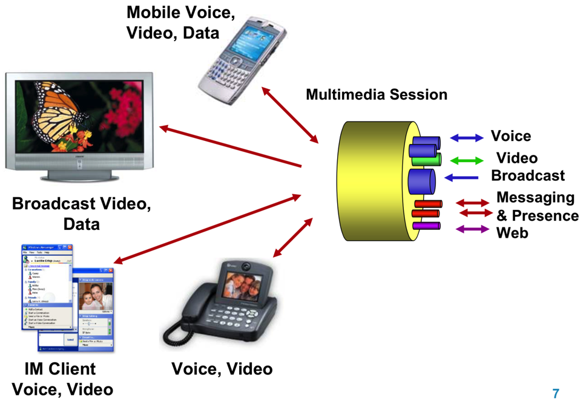

ETSI
ETSIETSI=European Telecommunications Standards Institute=欧洲电信标准协会- 是什么：一个欧洲的技术组织/机构
- 全称：
ETSI Technical Committee=ETSI技术委员会 - 总部：法国
- 目标：致力于欧盟范围内的ICT方面标准化
- 主要负责标准制定
- 主要涉及3方面=领域
- 电信 Telecommunications
- 信息技术 Information Technology
- 广播 Broadcasting
- 主要涉及3方面=领域
- 主要负责标准制定
- 成员
- 来自 59国家
- 的653个成员
- 来自 59国家
- 维度
- 3个维度
- 
- 3个维度
NGN
NGNNGN=Next Generation Networking=下一代网络- 范畴：
ETSI的NGN - 愿景=目标
- 基于IP的网络的内部和网络之间均可互操作
- Inter-operable, Inter-domain All IP-based network
- 宽带接入
- Broadband access
- 多媒体能力
- Multi-media capabilities
- 支持多种服务的移动和漫游
- Support mobility & nomadicity Multiple services
- 业务模型无关
- Business Model Agnostic
- 基于IP的网络的内部和网络之间均可互操作
- 服务范围
- 个人间通讯 Person-to-Person
- 会话 Conversational
- 概述
- 包含
- 语音电话Voice call
- 视频电话Video call
- 聊天 Chat
- 多媒体会话Multimedia Sessions
- 视频电话Video call
- 语音电话Voice call
- 概述
- 消息 Messaging
- 概述
- 
- 包含
- 邮件eMail
- 短信SMS
- 增强短信EMS
- 多媒体消息MMS
- 即时通讯和状态呈现 IM & Presence
- 多媒体消息MMS
- 增强短信EMS
- 概述
- 会话 Conversational
- 内容点播 Content-on-demand
- 概述
- 
- 包含
- 浏览Browsing
- 下载Download
- 流媒体传输 Streaming
- 推送Push
- 流媒体传输 Streaming
- 下载Download
- 广播Broadcast
- 浏览Browsing
- 概述
- 个人间通讯 Person-to-Person
- 实现多媒体=富媒体功能
- 
- 主要特点
- "plugging in" new Subsystem
- Separate Transport and Service Layers
- Open access to services from multiple operators
- Interoperability and flexible innovative services
- 核心组件=主要内容：包含各个子系统Subsystem
- IP connectivity subsystems
- NASS=Network Attachment Subsystem
- 主要功能
- Access authentication
- NW configuration e.g. DHCP
- Location function
- 主要功能
- RACS=Resource and Admission Control Subsystem
- 主要功能
- Resource admission control in Access Network
- NASS=Network Attachment Subsystem
- Service-oriented subsystems
- IMS = Core IMS
- 概述
- Based on 3GPP IMS core
- 主要功能
- 3GPP IMS (R6) supporting multimedia services and adapted to accommodate xDSL-based access, and PSTN/ISDN Simulation & Emulation
- 概述
- PES = PSTN/ISDN Emulation Subsystem=PSTN Emulation
- 概述
- CS phones: emulate legacy CS core network
- 主要功能
- A PSTN/ISDN Emulation Subsystem specifically tailored to allow TDM equipment replacement, while keeping legacy terminals unchanged
- 概述
- IMS = Core IMS
- IP connectivity subsystems
- 接入技术Access Technologies
- 主流网络
- Mobile
- 3GPP standardization
- DSL=Digital Subscriber Line
- Wired & Wireless LAN
- Cable
- Mobile
- 旧网络=遗留网络 Legacy Networks
- PSTN/ISDN emulation
- Provides PSTN/ISDN service capabilities and interfaces using adaptation to an IP infrastructure
- PSTN/ISDN simulation
- Provides PSTN/ISDN-like service capabilities using session control over IP interfaces and infrastructure
- PSTN/ISDN emulation
- 主流网络
- 版本和内容
- TISPAN R1= Release 1
- 发布时间：2005年12月
- 内容
- 概述
- Adopts the 3GPP IMS standard for SIP-based applications, and adds further functional blocks and subsystems to enable fixed access to IMS and to handle non-SIP applications
- 具体包含
- Service capabilities
- Real time conversational services (Voice, Video calls/sessions)
- Messaging (Instant Messaging, MMS) and Presence
- PSTN/ISDN emulation and simulation
- Network Architecture
- 3GPP IMS (R6) core sub-system reused as basis for SIP-based services control
- xDSL access a primary focus
- Initial network-edge QoS controls
- Service capabilities
- 概述
- TISPAN R2
- 时间：2008年4月
- 内容：
- TISPAN and 3GPP agreed on Common IMS platform
- 3GPP IMS (R7)
- Introduces new IMS enabled services and adds key elements
- Supplementary services (see 3GPP)
- IPTV (both IMS and non-IMS based)
- Home Networking
- Corporate networks and the NGN
- Additional support for Mobility & Nomadicity
- TISPAN and 3GPP agreed on Common IMS platform
- TISPAN R3
- 内容
- Improvement of several aspects introduced in the previous Releases
- IPTV service evolution
- IP Network to Network interconnection
- Corporate Network interconnection
- Home Network interconnection
- QoS and Security
- CDN
- P2P Study
- Improvement of several aspects introduced in the previous Releases
- 内容
- TISPAN R1= Release 1